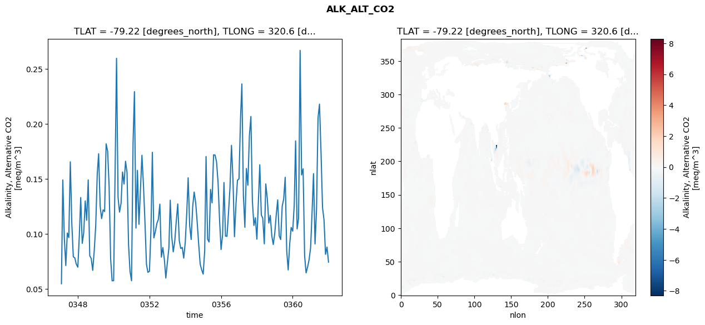
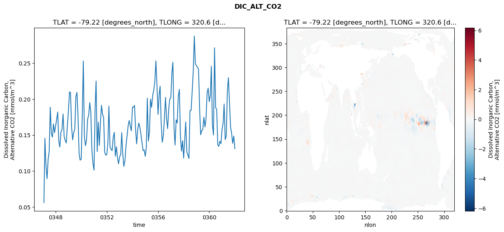
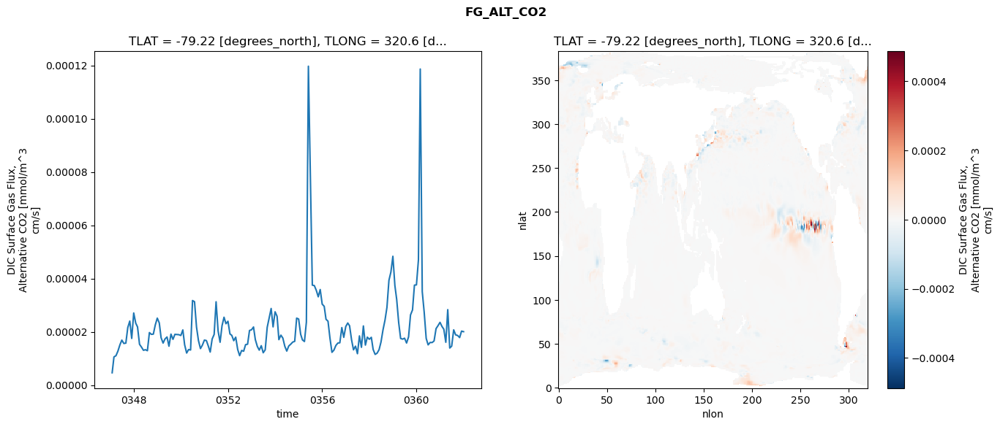
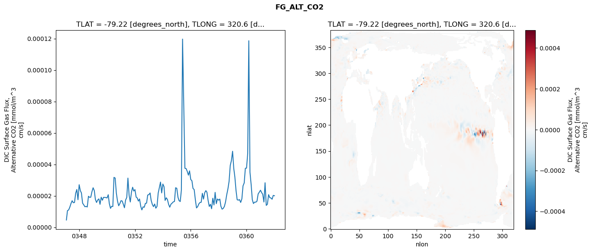
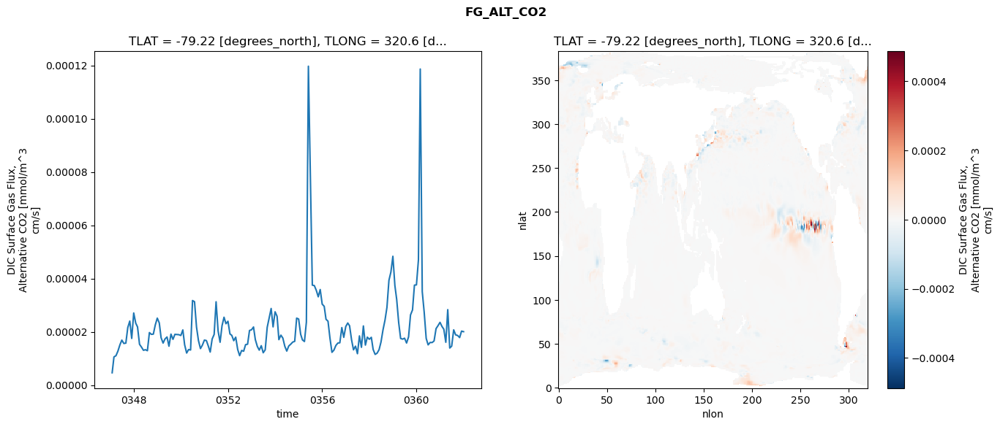

glb-dor_North_Atlantic_basin_002_1999-01-01_00008#
Simulation details#
Case: smyle.cdr-atlas-v0.glb-dor_North_Atlantic_basin_002_1999-01-01_00008.001
Basin: North_Atlantic_basin
Polygon: 2.0
Start date: 1999-01
Show code cell source Hide code cell source
import xarray as xr
import matplotlib.pyplot as plt
Show code cell source Hide code cell source
zarr_store = "/path/to/zarr/store"
# Parameters
zarr_store = "/global/cfs/projectdirs/m4746/Projects/Ocean-CDR-Atlas-v0/data/validation/smyle.cdr-atlas-v0.glb-dor_North_Atlantic_basin_002_1999-01-01_00008.001.validation.zarr"
Show code cell source Hide code cell source
%%time
ds_o = xr.open_zarr(zarr_store).compute()
ds_o
CPU times: user 672 ms, sys: 445 ms, total: 1.12 s
Wall time: 1.37 s
<xarray.Dataset> Size: 2MB
Dimensions: (nlat: 384, nlon: 320, time: 180)
Coordinates:
TLAT float64 8B -79.22
TLONG float64 8B 320.6
ULAT float64 8B -78.95
ULONG float64 8B 321.1
* time (time) object 1kB 0347-02-01 00:00:00 ... 0362-01-01 0...
z_t float32 4B 500.0
Dimensions without coordinates: nlat, nlon
Data variables:
ALK_ALT_CO2_diff (nlat, nlon) float32 492kB nan nan nan ... nan nan nan
ALK_ALT_CO2_rmse (time) float64 1kB 0.05473 0.1492 ... 0.08809 0.0744
DIC_ALT_CO2_diff (nlat, nlon) float32 492kB nan nan nan ... nan nan nan
DIC_ALT_CO2_rmse (time) float64 1kB 0.05637 0.1456 ... 0.1486 0.1311
ECOSYS_IFRAC_diff (nlat, nlon) float32 492kB nan nan nan ... nan nan nan
ECOSYS_IFRAC_rmse (time) float64 1kB 0.0001369 0.0002499 ... 0.0004392
FG_ALT_CO2_diff (nlat, nlon) float32 492kB nan nan nan ... nan nan nan
FG_ALT_CO2_rmse (time) float64 1kB 4.643e-06 1.06e-05 ... 2.007e-05xarray.Dataset
- nlat: 384
- nlon: 320
- time: 180
- TLAT()float64-79.22
- long_name :
- array of t-grid latitudes
- units :
- degrees_north
array(-79.22052261)
- TLONG()float64320.6
- long_name :
- array of t-grid longitudes
- units :
- degrees_east
array(320.56250892)
- ULAT()float64-78.95
- long_name :
- array of u-grid latitudes
- units :
- degrees_north
array(-78.95289509)
- ULONG()float64321.1
- long_name :
- array of u-grid longitudes
- units :
- degrees_east
array(321.12500894)
- time(time)object0347-02-01 00:00:00 ... 0362-01-...
- bounds :
- time_bound
- long_name :
- time
array([cftime.DatetimeNoLeap(347, 2, 1, 0, 0, 0, 0, has_year_zero=True), cftime.DatetimeNoLeap(347, 3, 1, 0, 0, 0, 0, has_year_zero=True), cftime.DatetimeNoLeap(347, 4, 1, 0, 0, 0, 0, has_year_zero=True), cftime.DatetimeNoLeap(347, 5, 1, 0, 0, 0, 0, has_year_zero=True), cftime.DatetimeNoLeap(347, 6, 1, 0, 0, 0, 0, has_year_zero=True), cftime.DatetimeNoLeap(347, 7, 1, 0, 0, 0, 0, has_year_zero=True), cftime.DatetimeNoLeap(347, 8, 1, 0, 0, 0, 0, has_year_zero=True), cftime.DatetimeNoLeap(347, 9, 1, 0, 0, 0, 0, has_year_zero=True), cftime.DatetimeNoLeap(347, 10, 1, 0, 0, 0, 0, has_year_zero=True), cftime.DatetimeNoLeap(347, 11, 1, 0, 0, 0, 0, has_year_zero=True), cftime.DatetimeNoLeap(347, 12, 1, 0, 0, 0, 0, has_year_zero=True), cftime.DatetimeNoLeap(348, 1, 1, 0, 0, 0, 0, has_year_zero=True), cftime.DatetimeNoLeap(348, 2, 1, 0, 0, 0, 0, has_year_zero=True), cftime.DatetimeNoLeap(348, 3, 1, 0, 0, 0, 0, has_year_zero=True), cftime.DatetimeNoLeap(348, 4, 1, 0, 0, 0, 0, has_year_zero=True), cftime.DatetimeNoLeap(348, 5, 1, 0, 0, 0, 0, has_year_zero=True), cftime.DatetimeNoLeap(348, 6, 1, 0, 0, 0, 0, has_year_zero=True), cftime.DatetimeNoLeap(348, 7, 1, 0, 0, 0, 0, has_year_zero=True), cftime.DatetimeNoLeap(348, 8, 1, 0, 0, 0, 0, has_year_zero=True), cftime.DatetimeNoLeap(348, 9, 1, 0, 0, 0, 0, has_year_zero=True), cftime.DatetimeNoLeap(348, 10, 1, 0, 0, 0, 0, has_year_zero=True), cftime.DatetimeNoLeap(348, 11, 1, 0, 0, 0, 0, has_year_zero=True), cftime.DatetimeNoLeap(348, 12, 1, 0, 0, 0, 0, has_year_zero=True), cftime.DatetimeNoLeap(349, 1, 1, 0, 0, 0, 0, has_year_zero=True), cftime.DatetimeNoLeap(349, 2, 1, 0, 0, 0, 0, has_year_zero=True), cftime.DatetimeNoLeap(349, 3, 1, 0, 0, 0, 0, has_year_zero=True), cftime.DatetimeNoLeap(349, 4, 1, 0, 0, 0, 0, has_year_zero=True), cftime.DatetimeNoLeap(349, 5, 1, 0, 0, 0, 0, has_year_zero=True), cftime.DatetimeNoLeap(349, 6, 1, 0, 0, 0, 0, has_year_zero=True), cftime.DatetimeNoLeap(349, 7, 1, 0, 0, 0, 0, has_year_zero=True), cftime.DatetimeNoLeap(349, 8, 1, 0, 0, 0, 0, has_year_zero=True), cftime.DatetimeNoLeap(349, 9, 1, 0, 0, 0, 0, has_year_zero=True), cftime.DatetimeNoLeap(349, 10, 1, 0, 0, 0, 0, has_year_zero=True), cftime.DatetimeNoLeap(349, 11, 1, 0, 0, 0, 0, has_year_zero=True), cftime.DatetimeNoLeap(349, 12, 1, 0, 0, 0, 0, has_year_zero=True), cftime.DatetimeNoLeap(350, 1, 1, 0, 0, 0, 0, has_year_zero=True), cftime.DatetimeNoLeap(350, 2, 1, 0, 0, 0, 0, has_year_zero=True), cftime.DatetimeNoLeap(350, 3, 1, 0, 0, 0, 0, has_year_zero=True), cftime.DatetimeNoLeap(350, 4, 1, 0, 0, 0, 0, has_year_zero=True), cftime.DatetimeNoLeap(350, 5, 1, 0, 0, 0, 0, has_year_zero=True), cftime.DatetimeNoLeap(350, 6, 1, 0, 0, 0, 0, has_year_zero=True), cftime.DatetimeNoLeap(350, 7, 1, 0, 0, 0, 0, has_year_zero=True), cftime.DatetimeNoLeap(350, 8, 1, 0, 0, 0, 0, has_year_zero=True), cftime.DatetimeNoLeap(350, 9, 1, 0, 0, 0, 0, has_year_zero=True), cftime.DatetimeNoLeap(350, 10, 1, 0, 0, 0, 0, has_year_zero=True), cftime.DatetimeNoLeap(350, 11, 1, 0, 0, 0, 0, has_year_zero=True), cftime.DatetimeNoLeap(350, 12, 1, 0, 0, 0, 0, has_year_zero=True), cftime.DatetimeNoLeap(351, 1, 1, 0, 0, 0, 0, has_year_zero=True), cftime.DatetimeNoLeap(351, 2, 1, 0, 0, 0, 0, has_year_zero=True), cftime.DatetimeNoLeap(351, 3, 1, 0, 0, 0, 0, has_year_zero=True), cftime.DatetimeNoLeap(351, 4, 1, 0, 0, 0, 0, has_year_zero=True), cftime.DatetimeNoLeap(351, 5, 1, 0, 0, 0, 0, has_year_zero=True), cftime.DatetimeNoLeap(351, 6, 1, 0, 0, 0, 0, has_year_zero=True), cftime.DatetimeNoLeap(351, 7, 1, 0, 0, 0, 0, has_year_zero=True), cftime.DatetimeNoLeap(351, 8, 1, 0, 0, 0, 0, has_year_zero=True), cftime.DatetimeNoLeap(351, 9, 1, 0, 0, 0, 0, has_year_zero=True), cftime.DatetimeNoLeap(351, 10, 1, 0, 0, 0, 0, has_year_zero=True), cftime.DatetimeNoLeap(351, 11, 1, 0, 0, 0, 0, has_year_zero=True), cftime.DatetimeNoLeap(351, 12, 1, 0, 0, 0, 0, has_year_zero=True), cftime.DatetimeNoLeap(352, 1, 1, 0, 0, 0, 0, has_year_zero=True), cftime.DatetimeNoLeap(352, 2, 1, 0, 0, 0, 0, has_year_zero=True), cftime.DatetimeNoLeap(352, 3, 1, 0, 0, 0, 0, has_year_zero=True), cftime.DatetimeNoLeap(352, 4, 1, 0, 0, 0, 0, has_year_zero=True), cftime.DatetimeNoLeap(352, 5, 1, 0, 0, 0, 0, has_year_zero=True), cftime.DatetimeNoLeap(352, 6, 1, 0, 0, 0, 0, has_year_zero=True), cftime.DatetimeNoLeap(352, 7, 1, 0, 0, 0, 0, has_year_zero=True), cftime.DatetimeNoLeap(352, 8, 1, 0, 0, 0, 0, has_year_zero=True), cftime.DatetimeNoLeap(352, 9, 1, 0, 0, 0, 0, has_year_zero=True), cftime.DatetimeNoLeap(352, 10, 1, 0, 0, 0, 0, has_year_zero=True), cftime.DatetimeNoLeap(352, 11, 1, 0, 0, 0, 0, has_year_zero=True), cftime.DatetimeNoLeap(352, 12, 1, 0, 0, 0, 0, has_year_zero=True), cftime.DatetimeNoLeap(353, 1, 1, 0, 0, 0, 0, has_year_zero=True), cftime.DatetimeNoLeap(353, 2, 1, 0, 0, 0, 0, has_year_zero=True), cftime.DatetimeNoLeap(353, 3, 1, 0, 0, 0, 0, has_year_zero=True), cftime.DatetimeNoLeap(353, 4, 1, 0, 0, 0, 0, has_year_zero=True), cftime.DatetimeNoLeap(353, 5, 1, 0, 0, 0, 0, has_year_zero=True), cftime.DatetimeNoLeap(353, 6, 1, 0, 0, 0, 0, has_year_zero=True), cftime.DatetimeNoLeap(353, 7, 1, 0, 0, 0, 0, has_year_zero=True), cftime.DatetimeNoLeap(353, 8, 1, 0, 0, 0, 0, has_year_zero=True), cftime.DatetimeNoLeap(353, 9, 1, 0, 0, 0, 0, has_year_zero=True), cftime.DatetimeNoLeap(353, 10, 1, 0, 0, 0, 0, has_year_zero=True), cftime.DatetimeNoLeap(353, 11, 1, 0, 0, 0, 0, has_year_zero=True), cftime.DatetimeNoLeap(353, 12, 1, 0, 0, 0, 0, has_year_zero=True), cftime.DatetimeNoLeap(354, 1, 1, 0, 0, 0, 0, has_year_zero=True), cftime.DatetimeNoLeap(354, 2, 1, 0, 0, 0, 0, has_year_zero=True), cftime.DatetimeNoLeap(354, 3, 1, 0, 0, 0, 0, has_year_zero=True), cftime.DatetimeNoLeap(354, 4, 1, 0, 0, 0, 0, has_year_zero=True), cftime.DatetimeNoLeap(354, 5, 1, 0, 0, 0, 0, has_year_zero=True), cftime.DatetimeNoLeap(354, 6, 1, 0, 0, 0, 0, has_year_zero=True), cftime.DatetimeNoLeap(354, 7, 1, 0, 0, 0, 0, has_year_zero=True), cftime.DatetimeNoLeap(354, 8, 1, 0, 0, 0, 0, has_year_zero=True), cftime.DatetimeNoLeap(354, 9, 1, 0, 0, 0, 0, has_year_zero=True), cftime.DatetimeNoLeap(354, 10, 1, 0, 0, 0, 0, has_year_zero=True), cftime.DatetimeNoLeap(354, 11, 1, 0, 0, 0, 0, has_year_zero=True), cftime.DatetimeNoLeap(354, 12, 1, 0, 0, 0, 0, has_year_zero=True), cftime.DatetimeNoLeap(355, 1, 1, 0, 0, 0, 0, has_year_zero=True), cftime.DatetimeNoLeap(355, 2, 1, 0, 0, 0, 0, has_year_zero=True), cftime.DatetimeNoLeap(355, 3, 1, 0, 0, 0, 0, has_year_zero=True), cftime.DatetimeNoLeap(355, 4, 1, 0, 0, 0, 0, has_year_zero=True), cftime.DatetimeNoLeap(355, 5, 1, 0, 0, 0, 0, has_year_zero=True), cftime.DatetimeNoLeap(355, 6, 1, 0, 0, 0, 0, has_year_zero=True), cftime.DatetimeNoLeap(355, 7, 1, 0, 0, 0, 0, has_year_zero=True), cftime.DatetimeNoLeap(355, 8, 1, 0, 0, 0, 0, has_year_zero=True), cftime.DatetimeNoLeap(355, 9, 1, 0, 0, 0, 0, has_year_zero=True), cftime.DatetimeNoLeap(355, 10, 1, 0, 0, 0, 0, has_year_zero=True), cftime.DatetimeNoLeap(355, 11, 1, 0, 0, 0, 0, has_year_zero=True), cftime.DatetimeNoLeap(355, 12, 1, 0, 0, 0, 0, has_year_zero=True), cftime.DatetimeNoLeap(356, 1, 1, 0, 0, 0, 0, has_year_zero=True), cftime.DatetimeNoLeap(356, 2, 1, 0, 0, 0, 0, has_year_zero=True), cftime.DatetimeNoLeap(356, 3, 1, 0, 0, 0, 0, has_year_zero=True), cftime.DatetimeNoLeap(356, 4, 1, 0, 0, 0, 0, has_year_zero=True), cftime.DatetimeNoLeap(356, 5, 1, 0, 0, 0, 0, has_year_zero=True), cftime.DatetimeNoLeap(356, 6, 1, 0, 0, 0, 0, has_year_zero=True), cftime.DatetimeNoLeap(356, 7, 1, 0, 0, 0, 0, has_year_zero=True), cftime.DatetimeNoLeap(356, 8, 1, 0, 0, 0, 0, has_year_zero=True), cftime.DatetimeNoLeap(356, 9, 1, 0, 0, 0, 0, has_year_zero=True), cftime.DatetimeNoLeap(356, 10, 1, 0, 0, 0, 0, has_year_zero=True), cftime.DatetimeNoLeap(356, 11, 1, 0, 0, 0, 0, has_year_zero=True), cftime.DatetimeNoLeap(356, 12, 1, 0, 0, 0, 0, has_year_zero=True), cftime.DatetimeNoLeap(357, 1, 1, 0, 0, 0, 0, has_year_zero=True), cftime.DatetimeNoLeap(357, 2, 1, 0, 0, 0, 0, has_year_zero=True), cftime.DatetimeNoLeap(357, 3, 1, 0, 0, 0, 0, has_year_zero=True), cftime.DatetimeNoLeap(357, 4, 1, 0, 0, 0, 0, has_year_zero=True), cftime.DatetimeNoLeap(357, 5, 1, 0, 0, 0, 0, has_year_zero=True), cftime.DatetimeNoLeap(357, 6, 1, 0, 0, 0, 0, has_year_zero=True), cftime.DatetimeNoLeap(357, 7, 1, 0, 0, 0, 0, has_year_zero=True), cftime.DatetimeNoLeap(357, 8, 1, 0, 0, 0, 0, has_year_zero=True), cftime.DatetimeNoLeap(357, 9, 1, 0, 0, 0, 0, has_year_zero=True), cftime.DatetimeNoLeap(357, 10, 1, 0, 0, 0, 0, has_year_zero=True), cftime.DatetimeNoLeap(357, 11, 1, 0, 0, 0, 0, has_year_zero=True), cftime.DatetimeNoLeap(357, 12, 1, 0, 0, 0, 0, has_year_zero=True), cftime.DatetimeNoLeap(358, 1, 1, 0, 0, 0, 0, has_year_zero=True), cftime.DatetimeNoLeap(358, 2, 1, 0, 0, 0, 0, has_year_zero=True), cftime.DatetimeNoLeap(358, 3, 1, 0, 0, 0, 0, has_year_zero=True), cftime.DatetimeNoLeap(358, 4, 1, 0, 0, 0, 0, has_year_zero=True), cftime.DatetimeNoLeap(358, 5, 1, 0, 0, 0, 0, has_year_zero=True), cftime.DatetimeNoLeap(358, 6, 1, 0, 0, 0, 0, has_year_zero=True), cftime.DatetimeNoLeap(358, 7, 1, 0, 0, 0, 0, has_year_zero=True), cftime.DatetimeNoLeap(358, 8, 1, 0, 0, 0, 0, has_year_zero=True), cftime.DatetimeNoLeap(358, 9, 1, 0, 0, 0, 0, has_year_zero=True), cftime.DatetimeNoLeap(358, 10, 1, 0, 0, 0, 0, has_year_zero=True), cftime.DatetimeNoLeap(358, 11, 1, 0, 0, 0, 0, has_year_zero=True), cftime.DatetimeNoLeap(358, 12, 1, 0, 0, 0, 0, has_year_zero=True), cftime.DatetimeNoLeap(359, 1, 1, 0, 0, 0, 0, has_year_zero=True), cftime.DatetimeNoLeap(359, 2, 1, 0, 0, 0, 0, has_year_zero=True), cftime.DatetimeNoLeap(359, 3, 1, 0, 0, 0, 0, has_year_zero=True), cftime.DatetimeNoLeap(359, 4, 1, 0, 0, 0, 0, has_year_zero=True), cftime.DatetimeNoLeap(359, 5, 1, 0, 0, 0, 0, has_year_zero=True), cftime.DatetimeNoLeap(359, 6, 1, 0, 0, 0, 0, has_year_zero=True), cftime.DatetimeNoLeap(359, 7, 1, 0, 0, 0, 0, has_year_zero=True), cftime.DatetimeNoLeap(359, 8, 1, 0, 0, 0, 0, has_year_zero=True), cftime.DatetimeNoLeap(359, 9, 1, 0, 0, 0, 0, has_year_zero=True), cftime.DatetimeNoLeap(359, 10, 1, 0, 0, 0, 0, has_year_zero=True), cftime.DatetimeNoLeap(359, 11, 1, 0, 0, 0, 0, has_year_zero=True), cftime.DatetimeNoLeap(359, 12, 1, 0, 0, 0, 0, has_year_zero=True), cftime.DatetimeNoLeap(360, 1, 1, 0, 0, 0, 0, has_year_zero=True), cftime.DatetimeNoLeap(360, 2, 1, 0, 0, 0, 0, has_year_zero=True), cftime.DatetimeNoLeap(360, 3, 1, 0, 0, 0, 0, has_year_zero=True), cftime.DatetimeNoLeap(360, 4, 1, 0, 0, 0, 0, has_year_zero=True), cftime.DatetimeNoLeap(360, 5, 1, 0, 0, 0, 0, has_year_zero=True), cftime.DatetimeNoLeap(360, 6, 1, 0, 0, 0, 0, has_year_zero=True), cftime.DatetimeNoLeap(360, 7, 1, 0, 0, 0, 0, has_year_zero=True), cftime.DatetimeNoLeap(360, 8, 1, 0, 0, 0, 0, has_year_zero=True), cftime.DatetimeNoLeap(360, 9, 1, 0, 0, 0, 0, has_year_zero=True), cftime.DatetimeNoLeap(360, 10, 1, 0, 0, 0, 0, has_year_zero=True), cftime.DatetimeNoLeap(360, 11, 1, 0, 0, 0, 0, has_year_zero=True), cftime.DatetimeNoLeap(360, 12, 1, 0, 0, 0, 0, has_year_zero=True), cftime.DatetimeNoLeap(361, 1, 1, 0, 0, 0, 0, has_year_zero=True), cftime.DatetimeNoLeap(361, 2, 1, 0, 0, 0, 0, has_year_zero=True), cftime.DatetimeNoLeap(361, 3, 1, 0, 0, 0, 0, has_year_zero=True), cftime.DatetimeNoLeap(361, 4, 1, 0, 0, 0, 0, has_year_zero=True), cftime.DatetimeNoLeap(361, 5, 1, 0, 0, 0, 0, has_year_zero=True), cftime.DatetimeNoLeap(361, 6, 1, 0, 0, 0, 0, has_year_zero=True), cftime.DatetimeNoLeap(361, 7, 1, 0, 0, 0, 0, has_year_zero=True), cftime.DatetimeNoLeap(361, 8, 1, 0, 0, 0, 0, has_year_zero=True), cftime.DatetimeNoLeap(361, 9, 1, 0, 0, 0, 0, has_year_zero=True), cftime.DatetimeNoLeap(361, 10, 1, 0, 0, 0, 0, has_year_zero=True), cftime.DatetimeNoLeap(361, 11, 1, 0, 0, 0, 0, has_year_zero=True), cftime.DatetimeNoLeap(361, 12, 1, 0, 0, 0, 0, has_year_zero=True), cftime.DatetimeNoLeap(362, 1, 1, 0, 0, 0, 0, has_year_zero=True)], dtype=object) - z_t()float32500.0
- long_name :
- depth from surface to midpoint of layer
- positive :
- down
- units :
- centimeters
- valid_max :
- 537500.0
- valid_min :
- 500.0
array(500., dtype=float32)
- ALK_ALT_CO2_diff(nlat, nlon)float32nan nan nan nan ... nan nan nan nan
- cell_methods :
- time: mean
- grid_loc :
- 3111
- long_name :
- Alkalinity, Alternative CO2
- units :
- meq/m^3
array([[ nan, nan, nan, ..., nan, nan, nan], [ nan, nan, nan, ..., nan, nan, nan], [0.06298828, 0.01977539, 0.01000977, ..., nan, nan, nan], ..., [ nan, nan, nan, ..., nan, nan, nan], [ nan, nan, nan, ..., nan, nan, nan], [ nan, nan, nan, ..., nan, nan, nan]], dtype=float32) - ALK_ALT_CO2_rmse(time)float640.05473 0.1492 ... 0.08809 0.0744
- cell_methods :
- time: mean
- grid_loc :
- 3111
- long_name :
- Alkalinity, Alternative CO2
- units :
- meq/m^3
array([0.054732 , 0.14916342, 0.0960854 , 0.07127986, 0.10090069, 0.09674423, 0.1656272 , 0.10901632, 0.07920699, 0.07824605, 0.07245705, 0.06977435, 0.09890769, 0.13311117, 0.09145842, 0.10093376, 0.1300543 , 0.11247904, 0.1491524 , 0.08017236, 0.07770779, 0.06688943, 0.08444147, 0.10737548, 0.15452552, 0.17299809, 0.12531429, 0.11396671, 0.1219175 , 0.12041048, 0.18195224, 0.17521314, 0.14299929, 0.07748323, 0.05740715, 0.05753554, 0.16037018, 0.25980584, 0.13339371, 0.11993033, 0.12774694, 0.15638884, 0.14544826, 0.16612205, 0.15588944, 0.09013711, 0.06592949, 0.05741503, 0.18280392, 0.22950298, 0.10534067, 0.15784275, 0.10879302, 0.1396941 , 0.17160438, 0.14438054, 0.11153613, 0.0724126 , 0.06511636, 0.0660453 , 0.10421085, 0.17429654, 0.09644149, 0.10205233, 0.10954727, 0.11315342, 0.12714065, 0.07894391, 0.08764661, 0.0768218 , 0.0599158 , 0.07391037, 0.08718334, 0.13069963, 0.09731692, 0.08377428, 0.09338241, 0.11120407, 0.12732417, 0.09386432, 0.08678923, 0.08772227, 0.07806995, 0.09256223, 0.1199088 , 0.15107752, 0.1076256 , 0.09495252, 0.12456701, 0.13813241, 0.12863723, 0.11073459, 0.09108238, 0.07259249, 0.0674621 , 0.06347188, 0.08466871, 0.17044905, 0.0952852 , 0.09269924, 0.14051053, 0.12830074, 0.17200076, 0.17175501, 0.16548185, 0.14659727, 0.11271203, 0.08587439, 0.09952686, 0.14681334, 0.09807318, 0.0978152 , 0.11897026, 0.14186227, 0.18062239, 0.14881376, 0.0975124 , 0.12746212, 0.148916 , 0.15007879, 0.20468142, 0.23650375, 0.13495669, 0.10607909, 0.1595751 , 0.14433666, 0.18944071, 0.20684061, 0.13000562, 0.10775338, 0.11470806, 0.09527171, 0.13002522, 0.16296691, 0.1172894 , 0.11434218, 0.09101427, 0.14551694, 0.13229548, 0.10992071, 0.11686027, 0.09817338, 0.09045165, 0.1009627 , 0.11818992, 0.13100557, 0.09821294, 0.09491569, 0.12537373, 0.13176732, 0.1515831 , 0.08448731, 0.06729345, 0.09105471, 0.10594215, 0.10255954, 0.12622765, 0.18463995, 0.10460917, 0.11425845, 0.26698625, 0.15371615, 0.15922607, 0.07995673, 0.0646125 , 0.07000301, 0.07658163, 0.08764512, 0.12119032, 0.15487143, 0.09095365, 0.12130995, 0.20551695, 0.21809729, 0.17441325, 0.1238497 , 0.11285815, 0.0814838 , 0.08809322, 0.07440496]) - DIC_ALT_CO2_diff(nlat, nlon)float32nan nan nan nan ... nan nan nan nan
- cell_methods :
- time: mean
- grid_loc :
- 3111
- long_name :
- Dissolved Inorganic Carbon, Alternative CO2
- units :
- mmol/m^3
array([[ nan, nan, nan, ..., nan, nan, nan], [ nan, nan, nan, ..., nan, nan, nan], [0.07202148, 0.02563477, 0.01171875, ..., nan, nan, nan], ..., [ nan, nan, nan, ..., nan, nan, nan], [ nan, nan, nan, ..., nan, nan, nan], [ nan, nan, nan, ..., nan, nan, nan]], dtype=float32) - DIC_ALT_CO2_rmse(time)float640.05637 0.1456 ... 0.1486 0.1311
- cell_methods :
- time: mean
- grid_loc :
- 3111
- long_name :
- Dissolved Inorganic Carbon, Alternative CO2
- units :
- mmol/m^3
array([0.05637356, 0.1455677 , 0.10688647, 0.08943672, 0.11631442, 0.12711656, 0.18865776, 0.15207641, 0.14713411, 0.1655012 , 0.15331185, 0.16307125, 0.17231397, 0.18210091, 0.14157203, 0.13340537, 0.15395057, 0.15775248, 0.17924836, 0.14805308, 0.14262149, 0.138986 , 0.16328289, 0.18360315, 0.21000657, 0.20916513, 0.16086542, 0.14335626, 0.15376905, 0.15830996, 0.20339787, 0.20918317, 0.17683117, 0.1239364 , 0.11524575, 0.11658054, 0.18171763, 0.25278441, 0.14763824, 0.13529865, 0.14312939, 0.17192974, 0.17766423, 0.19505339, 0.18172076, 0.12905987, 0.11072176, 0.10128495, 0.18898566, 0.22506434, 0.12716182, 0.16798334, 0.1356158 , 0.16580095, 0.19139281, 0.17886945, 0.17459884, 0.12603288, 0.12205665, 0.12308484, 0.14056339, 0.19025604, 0.13375164, 0.13038328, 0.12840687, 0.14661735, 0.15381764, 0.12069662, 0.13386235, 0.11823006, 0.11021581, 0.12007733, 0.12292606, 0.15337122, 0.12293182, 0.10653117, 0.11462395, 0.13524885, 0.14888007, 0.1631732 , 0.17025811, 0.16235378, 0.15592776, 0.18879417, 0.18855139, 0.19128554, 0.15711566, 0.13792758, 0.15808646, 0.1666916 , 0.16089945, 0.15061547, 0.13981355, 0.12841145, 0.12948945, 0.12062063, 0.13317472, 0.20129947, 0.14170943, 0.15420534, 0.20002117, 0.18841296, 0.20534979, 0.21212849, 0.22410601, 0.25294405, 0.21906503, 0.17865202, 0.20600153, 0.21783824, 0.16638205, 0.13997539, 0.14925665, 0.17270082, 0.20234812, 0.17223891, 0.15901032, 0.18587234, 0.19967701, 0.20188946, 0.23728834, 0.25110484, 0.16054831, 0.13613648, 0.17116983, 0.16684529, 0.20419316, 0.21350533, 0.14844842, 0.12769023, 0.14223778, 0.1180296 , 0.14469741, 0.16815695, 0.12684639, 0.12266753, 0.11749192, 0.18405197, 0.18437156, 0.21005122, 0.23782902, 0.28757375, 0.24856412, 0.24637538, 0.24380351, 0.24187455, 0.18722452, 0.15045174, 0.15622887, 0.15778503, 0.17482416, 0.16136054, 0.17225594, 0.20851281, 0.21517653, 0.1963777 , 0.20523615, 0.24552578, 0.16407786, 0.15017858, 0.27120912, 0.1884703 , 0.18561454, 0.13656501, 0.1342604 , 0.14145179, 0.13815518, 0.15844528, 0.16664401, 0.19320959, 0.14378785, 0.14853071, 0.21084378, 0.22961085, 0.19497278, 0.16102373, 0.15220916, 0.13865371, 0.14860034, 0.13111801]) - ECOSYS_IFRAC_diff(nlat, nlon)float32nan nan nan nan ... nan nan nan nan
- cell_methods :
- time: mean
- grid_loc :
- 2110
- long_name :
- Ice Fraction for ecosys fluxes
- units :
- fraction
array([[ nan, nan, nan, ..., nan, nan, nan], [ nan, nan, nan, ..., nan, nan, nan], [ 2.0790100e-04, -2.0593405e-04, -3.0040741e-05, ..., nan, nan, nan], ..., [ nan, nan, nan, ..., nan, nan, nan], [ nan, nan, nan, ..., nan, nan, nan], [ nan, nan, nan, ..., nan, nan, nan]], dtype=float32) - ECOSYS_IFRAC_rmse(time)float640.0001369 0.0002499 ... 0.0004392
- cell_methods :
- time: mean
- grid_loc :
- 2110
- long_name :
- Ice Fraction for ecosys fluxes
- units :
- fraction
array([0.00013691, 0.00024988, 0.00044145, 0.00050708, 0.00042235, 0.00047468, 0.00073766, 0.00042592, 0.00050926, 0.00048468, 0.00036705, 0.00151992, 0.00152264, 0.00037213, 0.00047321, 0.00046584, 0.00044636, 0.00044034, 0.00076026, 0.0010593 , 0.00046984, 0.00049508, 0.00047178, 0.00072608, 0.00085429, 0.0007602 , 0.00075032, 0.00038865, 0.00033843, 0.00038882, 0.00066838, 0.00062993, 0.00041349, 0.00044692, 0.00039178, 0.00044459, 0.00048212, 0.00029572, 0.00041481, 0.00034246, 0.0003537 , 0.00051248, 0.0008104 , 0.00057238, 0.00048643, 0.00061128, 0.00037524, 0.00062609, 0.00073185, 0.00082151, 0.00080976, 0.00046117, 0.00030399, 0.000541 , 0.00078284, 0.0005145 , 0.00041546, 0.00050353, 0.00047024, 0.00091345, 0.00091325, 0.00102914, 0.00072882, 0.00035164, 0.00028284, 0.00038217, 0.00085779, 0.000805 , 0.00051373, 0.00046445, 0.00037031, 0.00083133, 0.00218846, 0.00056782, 0.00058692, 0.0004448 , 0.00089615, 0.0005661 , 0.00067936, 0.00065704, 0.00061836, 0.00056903, 0.00044163, 0.00078548, 0.00161071, 0.00110974, 0.00070349, 0.00057046, 0.0003811 , 0.00050556, 0.00065109, 0.00065778, 0.00047166, 0.00037693, 0.00034997, 0.00045349, 0.000573 , 0.00044454, 0.00036874, 0.00042938, 0.00049842, 0.00040036, 0.00066538, 0.00076613, 0.00077417, 0.00037711, 0.00052074, 0.0006279 , 0.00085978, 0.00099141, 0.00061623, 0.00035777, 0.00048478, 0.00045011, 0.0008357 , 0.00052649, 0.00064332, 0.00044831, 0.00049917, 0.00055454, 0.0010709 , 0.00077584, 0.0006582 , 0.00042519, 0.00037884, 0.00038474, 0.00081325, 0.00048981, 0.00057774, 0.00053999, 0.00039141, 0.0006167 , 0.00063094, 0.00047362, 0.00040306, 0.00034024, 0.00042657, 0.00060978, 0.00078908, 0.0003479 , 0.00033064, 0.00040789, 0.00047604, 0.00034279, 0.0005481 , 0.00055653, 0.00047332, 0.00051913, 0.00036901, 0.00043879, 0.00076107, 0.00041946, 0.00039192, 0.00035378, 0.00039618, 0.00031691, 0.00073196, 0.00056451, 0.00053474, 0.00039577, 0.00041908, 0.00048697, 0.00082357, 0.00035283, 0.00040536, 0.00040576, 0.00049858, 0.00074167, 0.00080498, 0.00081383, 0.00052812, 0.00045043, 0.0002962 , 0.00053381, 0.00112672, 0.00081381, 0.00051616, 0.00045713, 0.00039646, 0.00043919]) - FG_ALT_CO2_diff(nlat, nlon)float32nan nan nan nan ... nan nan nan nan
- cell_methods :
- time: mean
- grid_loc :
- 2110
- long_name :
- DIC Surface Gas Flux, Alternative CO2
- units :
- mmol/m^3 cm/s
array([[ nan, nan, nan, ..., nan, nan, nan], [ nan, nan, nan, ..., nan, nan, nan], [-4.3603904e-08, 1.8974538e-07, 7.2087460e-08, ..., nan, nan, nan], ..., [ nan, nan, nan, ..., nan, nan, nan], [ nan, nan, nan, ..., nan, nan, nan], [ nan, nan, nan, ..., nan, nan, nan]], dtype=float32) - FG_ALT_CO2_rmse(time)float644.643e-06 1.06e-05 ... 2.007e-05
- cell_methods :
- time: mean
- grid_loc :
- 2110
- long_name :
- DIC Surface Gas Flux, Alternative CO2
- units :
- mmol/m^3 cm/s
array([4.64296239e-06, 1.06044697e-05, 1.10523907e-05, 1.27643814e-05, 1.51207490e-05, 1.69018577e-05, 1.56377725e-05, 1.57731250e-05, 2.16060837e-05, 2.40512769e-05, 1.75342212e-05, 2.70734499e-05, 2.32792190e-05, 2.18560434e-05, 1.53324653e-05, 1.42860314e-05, 1.30761933e-05, 1.33015640e-05, 1.29296730e-05, 1.97294728e-05, 1.90620944e-05, 1.91495776e-05, 2.25911199e-05, 2.51487650e-05, 2.33350478e-05, 1.78097494e-05, 1.57935729e-05, 1.73460895e-05, 1.80787913e-05, 1.46073621e-05, 1.91529608e-05, 1.71991283e-05, 1.90615747e-05, 1.89904235e-05, 1.89417721e-05, 1.86392181e-05, 2.07274366e-05, 1.51296235e-05, 1.20492810e-05, 1.33605370e-05, 1.31923462e-05, 3.17542983e-05, 3.13124645e-05, 2.17696038e-05, 1.67358813e-05, 1.37105022e-05, 1.50255830e-05, 1.69198379e-05, 1.67173366e-05, 1.47737073e-05, 1.24188466e-05, 1.73069315e-05, 1.90311379e-05, 3.12896180e-05, 2.03766588e-05, 1.61030508e-05, 2.22865874e-05, 2.54890941e-05, 2.30482992e-05, 2.39738091e-05, 1.92158506e-05, 1.86966135e-05, 1.66747938e-05, 1.80055104e-05, 1.33674487e-05, 1.10677577e-05, 1.30171046e-05, 1.27319150e-05, 1.52006353e-05, 1.53641048e-05, 2.05242306e-05, 2.07725018e-05, 2.18298837e-05, 1.70955713e-05, 1.45425175e-05, 1.31427475e-05, 1.48118554e-05, 1.21586476e-05, 1.32500521e-05, 2.17089251e-05, ... 1.19669475e-04, 7.92038997e-05, 3.75187997e-05, 3.73624234e-05, 3.56037448e-05, 3.31479076e-05, 3.58877536e-05, 3.03933366e-05, 2.95843871e-05, 2.47229959e-05, 2.39978355e-05, 1.77001779e-05, 1.23217561e-05, 1.31282235e-05, 1.48941331e-05, 1.58021313e-05, 1.58926113e-05, 2.15988398e-05, 1.79344140e-05, 2.19908765e-05, 2.33203285e-05, 2.22766130e-05, 1.70017417e-05, 1.32545408e-05, 1.46293985e-05, 1.17981617e-05, 1.84791326e-05, 1.42030705e-05, 2.22146699e-05, 1.50209623e-05, 1.80061660e-05, 1.72192737e-05, 1.79486452e-05, 1.34151179e-05, 1.15380231e-05, 1.19928487e-05, 1.33042192e-05, 1.62084063e-05, 2.07576122e-05, 2.44213839e-05, 2.91726379e-05, 3.93531884e-05, 4.24123039e-05, 4.83526529e-05, 3.73753856e-05, 3.21528504e-05, 2.34422849e-05, 1.75197694e-05, 1.72651197e-05, 1.76174413e-05, 1.58068362e-05, 1.81171280e-05, 2.63372283e-05, 2.82220867e-05, 3.75284573e-05, 3.76292231e-05, 4.70317639e-05, 1.18615537e-04, 3.50768816e-05, 2.73671972e-05, 1.75513547e-05, 1.51206292e-05, 1.60201451e-05, 1.59890001e-05, 1.65837085e-05, 2.12214463e-05, 2.23180294e-05, 2.35684758e-05, 2.20113783e-05, 2.10024019e-05, 1.60871262e-05, 2.83287386e-05, 1.39327804e-05, 1.46501780e-05, 2.07602875e-05, 1.88507449e-05, 1.86502826e-05, 1.78502634e-05, 2.02817464e-05, 2.00682756e-05])
- timePandasIndex
PandasIndex(CFTimeIndex([0347-02-01 00:00:00, 0347-03-01 00:00:00, 0347-04-01 00:00:00, 0347-05-01 00:00:00, 0347-06-01 00:00:00, 0347-07-01 00:00:00, 0347-08-01 00:00:00, 0347-09-01 00:00:00, 0347-10-01 00:00:00, 0347-11-01 00:00:00, ... 0361-04-01 00:00:00, 0361-05-01 00:00:00, 0361-06-01 00:00:00, 0361-07-01 00:00:00, 0361-08-01 00:00:00, 0361-09-01 00:00:00, 0361-10-01 00:00:00, 0361-11-01 00:00:00, 0361-12-01 00:00:00, 0362-01-01 00:00:00], dtype='object', length=180, calendar='noleap', freq='MS'))
Show code cell source Hide code cell source
variables = [v[:-5] for v in ds_o.variables if "_rmse" in v]
Show code cell source Hide code cell source
plt.rcParams.update({'figure.max_open_warning': 0})
for v in variables:
fig, axs = plt.subplots(1, 2, figsize=(15, 6))
ds_o[f"{v}_rmse"].plot(ax=axs[0])
ds_o[f"{v}_diff"].plot(ax=axs[1])
plt.suptitle(v, fontweight="bold")


 

